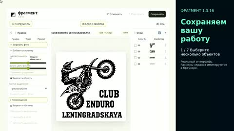
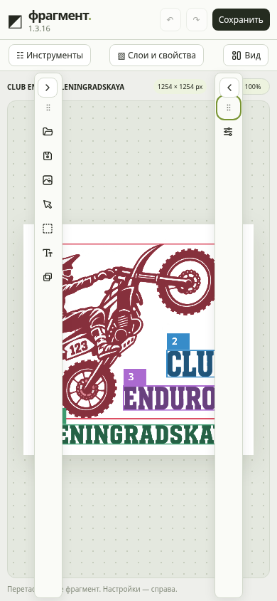
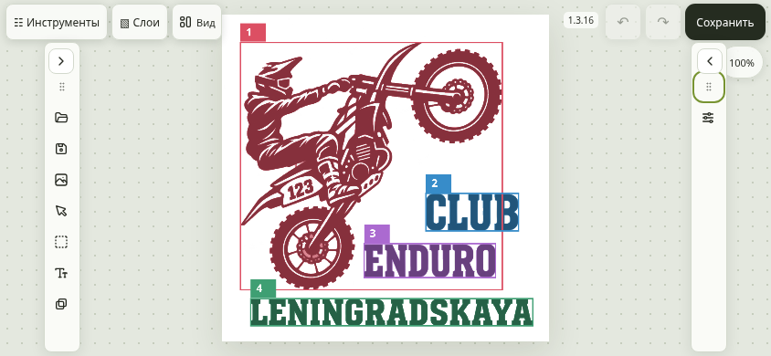
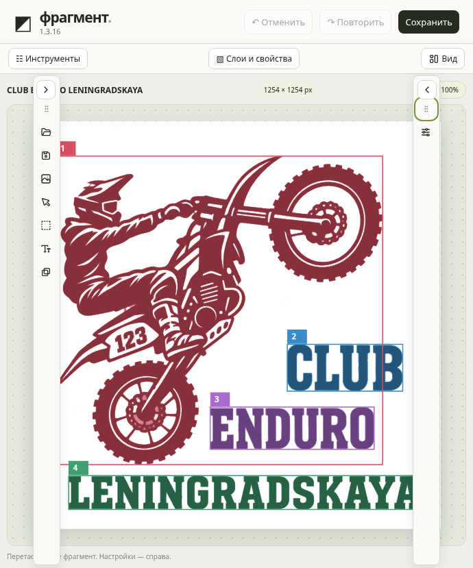
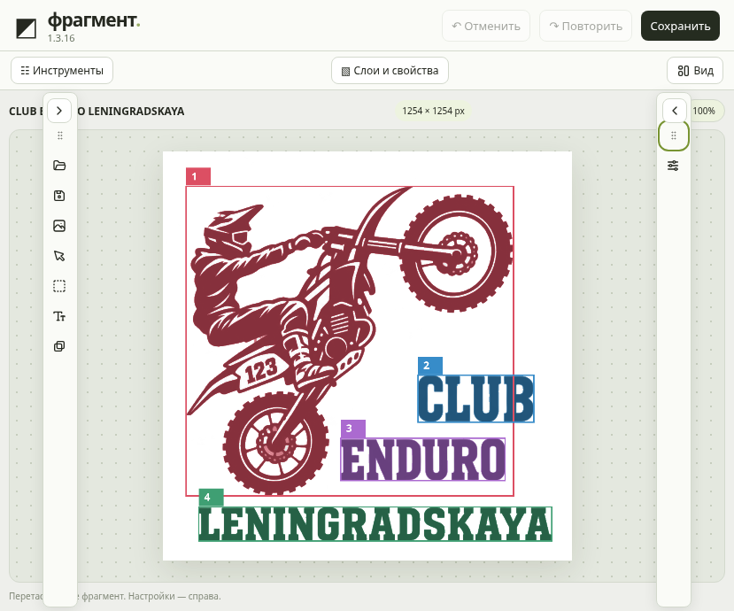

Открыть редакторФрагмент 1.3.16
Сохранение проекта при повороте, складывании и повторном запуске. Независимые позиции панелей в четырёх форматах экрана. Разделение нескольких выбранных объектов.
Перед установкой поверх 1.3.15 сохраните работу: «Проект → Сохранить проект». В старой версии автосохранения документа ещё не было.
- Разделите логотип. Выберите две или три надписи, измените чувствительность и разделите их снова. Кнопка активна, количество в предпросмотре соответствует результату. Одна отмена возвращает исходные выбранные объекты.
- Поверните, сложите и раскройте телефон; несколько раз нажмите «Вид». Проверьте слои, выделение и правки. Затем закройте приложение и откройте снова: проект восстанавливается.
- Передвиньте полную панель и полосу значков по-разному. Проверьте независимые положения для телефона и раскрытого экрана в обеих ориентациях. Новые раскладки по умолчанию располагают панели по краям.
- Выберите маленькую букву или цифру. Перетяните сам рисунок и отдельную ручку с крестом: размер сохраняется. Затем потяните вынесенную боковую точку, чтобы растянуть элемент.
- Цвет меняется сразу при выборе оттенка, без «Применить». Перебор цветов в одном открытии палитры отменяется одним нажатием.

Нажмите ▶ для запуска со звукомОткрыть MP4 отдельно · Русские субтитры
Проверки
Браузер: совпадение документа до и после поворотов, смены вида и перезагрузки, включая пиксели изображений, группы, текст, выделение и историю отмены/повтора. Проверены оба состояния панелей в четырёх раскладках. Все 304 ресурса редактора в APK совпадают с веб-версией.

Телефон · вертикально. Проверка размеров окна в браузере.
Телефон · горизонтально. Проверка размеров окна в браузере.
Раскрытый экран · вертикально. Проверка размеров окна в браузере.
Раскрытый экран · горизонтально. Проверка размеров окна в браузере.Android 15 · эмулятор Pixel 6
PASS: четыре раскладки, повороты в обе стороны и увеличение/уменьшение размера экрана. После принудительного закрытия — точное восстановление 22 слоёв, пикселей, выделения, параметров и числа действий отмены/повтора. Размер раскрытого экрана эмулирован; физический Fold не проверялся.
Исходная запись Android · Отчёт · GitHub Actions